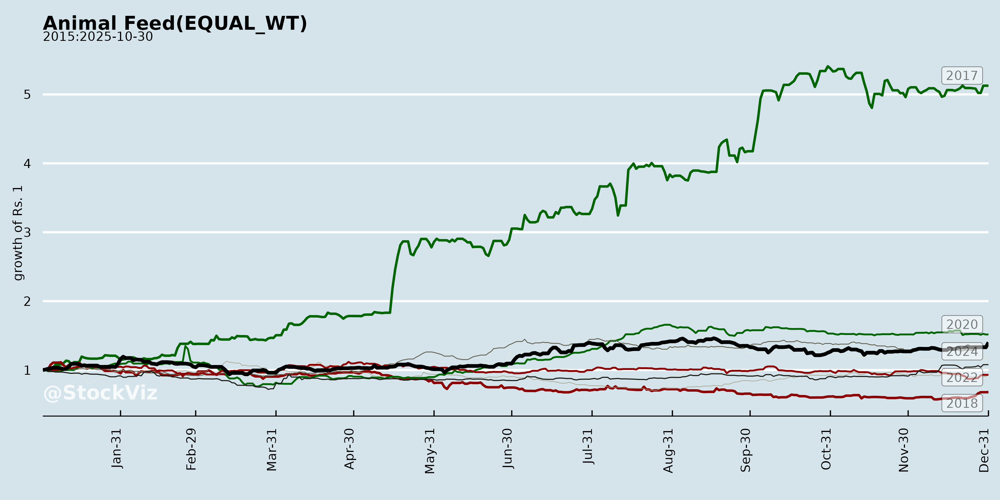
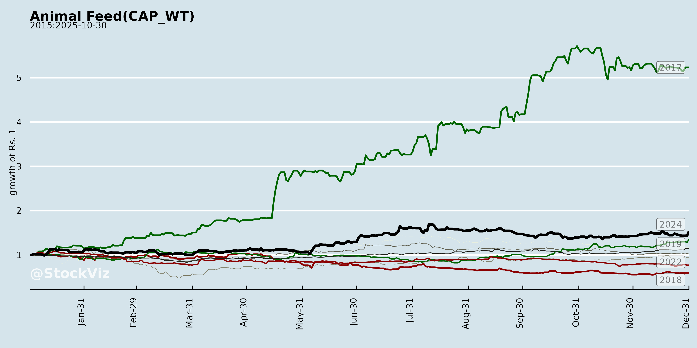
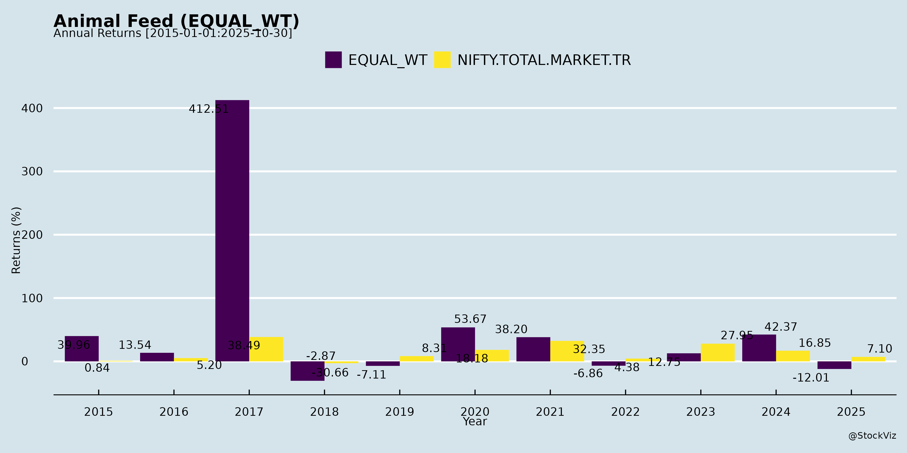
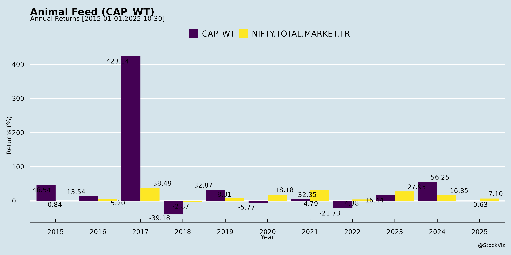
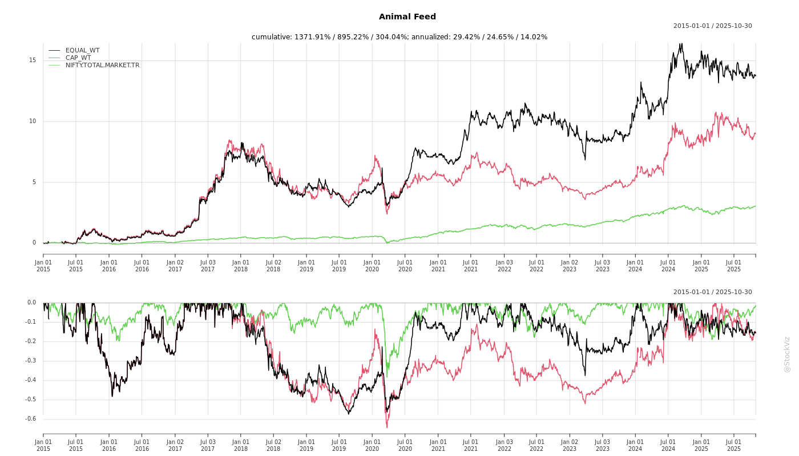
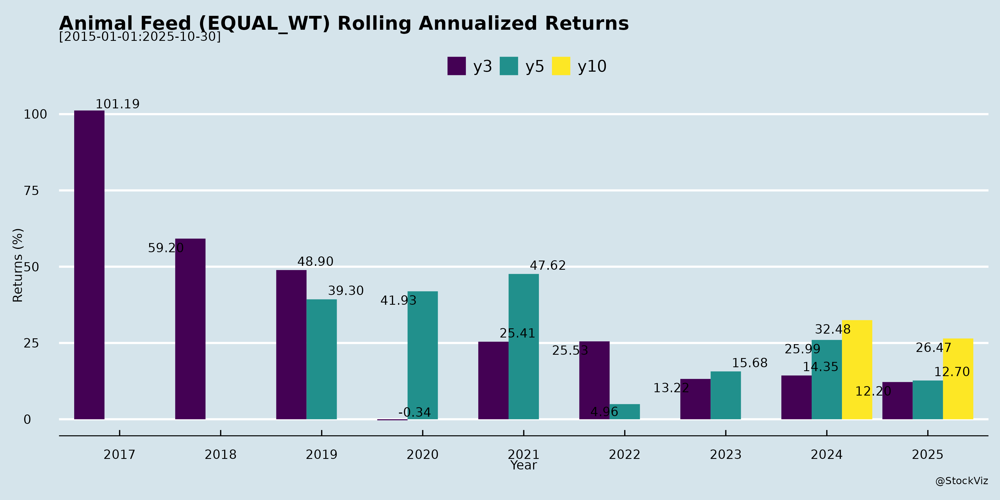
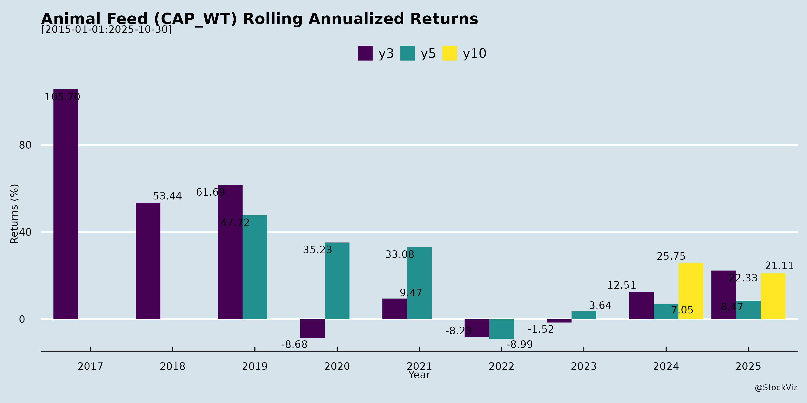

asof: 2025-11-29
Summary Analysis: Indian Animal Feed Sector (Based on Q2/H1 FY26 Earnings Transcripts)
The analysis draws from transcripts of Avanti Feeds (shrimp feed dominant, ~50%+ market share), Godrej Agrovet (cattle feed ~50% of animal feed segment), and Narmada Agrobase (cattle feed & cotton seed by-products). The sector shows resilient volume growth amid rising raw material costs, with aquaculture feed (shrimp/fish) and cattle feed as key sub-segments. Overall, H1 FY26 reflects stable-to-strong volumes but margin pressure; FY26 guidance points to mid-teens revenue/EBITDA growth potential, tempered by costs.
Tailwinds (Positive Drivers)
Headwinds (Challenges)
Growth Prospects
Key Risks
| Risk Category | Details | Mitigation |
|---|---|---|
| Commodity Volatility | RM prices fluctuate 20-35% (fish meal/soy); poor harvests/rains. | Buffer stocks, hedging, backward integration trials. |
| Margin Erosion | Pass-through limits; competition (2-3 new players in products). | Value-adds, cost initiatives (Godrej Project PI), utilization >70%. |
| Export/Trade Barriers | US tariffs (50% reciprocal on shrimp, indirect feed impact); ADD/CVD reviews. | Diversification (non-US markets, domestic push). |
| Working Capital/Leverage | Inventory buildup (Narmada borrowings up); negative op. cash flow FY25. | H2 unwinding (Godrej); revenue ramps. |
| Weather/Climate | Rains/diseases hit aquaculture/crops (Avanti/Godrej). | Multi-crop portfolios, R&D. |
| Execution | New launches (pet/fish feed), capacity ramps delay. | Trials/partnerships (Avanti-Thai Union). |
Overall Outlook: Sector poised for 10-15% FY26 growth (volumes lead), but margins may dip to 9-12% (vs. H1 13-14%). Bullish on organized players’ share gains amid protein demand; watch RM prices (fish meal quota/Chile exports) and monsoons for H2 inflection. Avanti leads aquaculture (~50% share), Godrej/Narmada strong in cattle feed diversification.
asof: 2025-12-01
Indian Animal Feed Sector Analysis
Based on Q3 & 9M FY25 Financial Results (ended Dec 31, 2024) of Key Players: Avanti Feeds (Aqua/Shrimp Feed Leader), Narmada Agrobase (Cattle Feed), Ajooni Biotech (Biotech/Feed).
The sector shows resilience with revenue growth (Avanti: +9% YoY Q3 revenue to ₹1,366 Cr; Narmada: PAT +679% to ₹1 Cr; Ajooni: +70% YoY Q3 revenue to ₹34 Cr), driven by protein demand. However, margins face pressure from input costs. Below is a structured summary:
Tailwinds (Positive Drivers)
Headwinds (Challenges)
Growth Prospects (Opportunities)
Key Risks
| Risk Category | Details | Impact from Filings |
|---|---|---|
| Commodity Prices | 70-80% costs tied to volatile soy/maize/fishmeal. | Avanti material costs +9% YoY; potential margin erosion. |
| Regulatory/Compliance | SEBI filings, Ind AS adherence; rights deviation scrutiny. | No deviations reported, but audit qualifications possible (noted in Avanti). |
| Operational | Disease outbreaks, inventory pile-up, low non-feed segments. | Avanti hatchery losses ₹1 Cr Q3; associate losses. |
| Financial | Debt (Ajooni: ₹206 Cr), forex (exports), dilution from rights. | Low defaults (all “Nil”); EPS restated for rights (Narmada). |
| Market | Competition from unorganized (60% share), monsoon/seasonality. | Revenue concentration in shrimp feed (Avanti 76%). |
Overall Outlook: Positive (Buy/Hold) with 15-20% sector growth potential FY26, led by aqua. Avanti as bellwether (strong balance sheet: assets ₹3,674 Cr). Monitor input prices and monsoon for Q4. Risks mitigated by low debt (Avanti net cash) and capex.
asof: 2025-11-29
Analysis of Indian Animal Feed Sector (Focus: Aquaculture & Poultry Feed)
The provided documents primarily feature Avanti Feeds Limited (a leading shrimp feed and aqua nutrition player), alongside snippets from peers like Mulkka Proteins (fish meal/oil), Godrej Agrovet (diversified agrovet with feed), Narmada Agrobase (cattle feed), and Ajooni Biotech (biotech/feed-related). Avanti’s FY25 audited results dominate, showing robust performance in shrimp feed (88% of revenue). Insights are extrapolated to the Indian animal feed sector (valued ~USD 10-12 Bn, CAGR 5-8%), emphasizing aquaculture feed (shrimp dominant) amid poultry/livestock growth.
Tailwinds (Positive Drivers)
Headwinds (Challenges)
Growth Prospects
Key Risks
| Risk Category | Description | Mitigation/Impact |
|---|---|---|
| Regulatory/Tax | GST demands (e.g., Mulkka ₹141 Cr); SEBI compliance. | Contesting via appeals; low materiality per mgmt. High if escalated. |
| Commodity Volatility | Fishmeal/soy price spikes (44% expenses); forex gains/losses (₹155 Cr FY25). | Hedging/FV gains (₹2,453 Cr); inventory mgmt. Medium-high impact. |
| Operational | Disease outbreaks (shrimp/poultry); balancing Q4 figures (note 3). | Diversification; clean audit opinion. Medium. |
| Financial | Debt low (₹1,325 Cr) but lease/finance costs; dividend payouts ₹975 Cr. | Strong cash (₹2,613 Cr equiv.); reserves ₹2,79,000 Cr. Low. |
| Market/Competition | Import dependence (soy); peers (Godrej, Waterbase). | Market leadership; exports. Medium. |
| Governance | Board changes (Narmada); ESOP dilution minimal (Godrej 453 shares). | Compliant; no red flags. Low. |
Overall Summary
Bullish Outlook with Resilience: Indian animal feed (aqua-led) benefits from protein demand tailwinds, with Avanti exemplifying +40% profit growth amid 5% revenue rise. Growth prospects strong (10%+ CAGR), fueled by exports/capex. Headwinds like input costs/GST are manageable (no audit qualifications). Key Watch: Raw material stability, tax resolutions. Recommendation: Positive; sector poised for 15-20% earnings growth FY26, but monitor monsoon/commodity cycles. Peers reinforce stability (e.g., Godrej ESOP, Ajooni AGM).
Data as of May-Oct 2025 filings; sector inferences based on trends.
asof: 2025-11-29
Indian Animal Feed Sector Analysis (Based on Q2/H1 FY26 Earnings Transcripts: Avanti Feeds, Godrej Agrovet, Narmada Agrobase)
Headwinds
Tailwinds
Growth Prospects
Key Risks
Overall Summary: Sector shows resilient volumes (9-18% YoY growth) amid cost pressures, with aquaculture/cattle feed as bright spots. H2 FY26 growth likely moderate (Avanti 575k MT; Godrej healthy bottom-line), supported by diversification/exports, but RM inflation caps margins at 9-14%. Long-term prospects strong (rising protein demand, non-GMO exports), offset by volatility risks—focus on efficiencies/value-add critical for outperformance.
asof: 2025-12-01
Summary Analysis: Indian Animal Feed Sector (Based on Q2/H1 FY26 Disclosures from Avanti Feeds, Mukka Proteins, Narmada Agrobase, and Ajooni Biotech)
The Indian animal feed sector, encompassing aquaculture feeds (shrimp/fish), fishmeal/insect proteins, cattle feed, and biotech nutrition, shows robust revenue momentum driven by domestic livestock/poultry demand and exports. Key players reported aggregate H1 revenue growth of ~20-30% YoY (e.g., Mukka +31%, Ajooni +23%, Narmada +2%, Avanti non-operational update). However, working capital intensity and regulatory hurdles persist. Below is a structured analysis of headwinds, tailwinds, growth prospects, and key risks.
Tailwinds (Positive Drivers)
Headwinds (Challenges)
Growth Prospects
Key Risks
| Risk Category | Details | Impact Level |
|---|---|---|
| Commodity/Supply Chain | Volatile raw material prices (fishmeal/maize/soy); inventory gluts signal overstocking risk. | High |
| Regulatory/Legal | GST SCNs (Mukka: ₹2.72 Cr + ₹44 Cr ITC dispute, under contest); forex approvals (Mukka Oman, Avanti Dutch). | Medium |
| Liquidity/Debt | High leverage (Mukka debt/equity ~1.5x); negative FCF strains amid capex. | High |
| Forex/Export | 60%+ export reliance (Mukka); rupee volatility + trade barriers (EU duties). | Medium |
| Operational | Single-segment concentration (all in proteins/feed); weather/seasonality in aqua/livestock. | Medium |
| Execution | Delays in expansions/mergers (Mukka Oman by Mar’26); Rights issue unutilized capex (Narmada). | Low-Medium |
Overall Outlook: Positive with Caution. Tailwinds from demand/export growth outweigh headwinds, projecting 15-20% sector revenue CAGR FY26-28. Focus on debt reduction and inventory optimization critical. Investors should monitor Q3 cash flows and regulatory resolutions. (Analysis based solely on provided filings; broader macro like El Niño/monsoon not covered.)
asof: 2025-11-29
Analysis of Indian Animal Feed Sector Based on Provided Announcements
The provided documents highlight recent developments from key players—Godrej Agrovet, Mukka Proteins, Narmada Agrobase, and Ajooni Biotech—in the Indian animal feed ecosystem (encompassing cattle/dairy feed, poultry, aqua, oil palm support, and alternative proteins). These reflect a sector driven by rising livestock/dairy demand, sustainability pushes, and capacity expansions amid cost pressures. Below is a structured analysis of headwinds, tailwinds, growth prospects, and key risks.
Headwinds
Tailwinds
Growth Prospects
Key Risks
Summary
The Indian animal feed sector shows resilient growth (tailwinds from govt ties, sustainability tech, demand) with H1 FY26 revenues up ~19% YoY (Narmada proxy), backed by ₹120+ Cr investments (Godrej ₹70 Cr, Mukka ₹6 Cr, Ajooni ₹45 Cr). Tailwinds dominate via innovation (BSF proteins) and expansions, projecting strong prospects in dairy/poultry/aqua. However, headwinds like raw material inflation pose margin risks, alongside execution/commodity volatility as top threats. Overall outlook: Positive (Buy/Hold bias) for sustainability leaders, with 15-20% sector growth potential if costs stabilize—monitor Q3 results for confirmation.
Copyright © 2023 SAS Data Analytics Pvt. Ltd. All rights reserved.